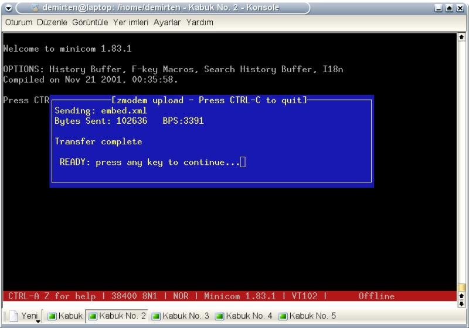

- Önceki bölümde anlatılan niteliklere uygun seri iletişim kablosu edinebildiyseniz şimdi seri portlar arasından dosya transferi için gerekli ayarlamaları yapabiliriz. Bunun için çok gerekli olmamakla birlikte, seri portu kullanacak isek başka amaçlar için de bize yardımcı olabilecek minicom uygulamasını sisteme kurabiliriz. Hemen gerekli kütüphanelerin neler olduğunu öğrenelim:
laptop:~/docbook/embedded$ ldd /usr/bin/minicom libncurses.so.5 => /lib/libncurses.so.5 (0x4001b000) libc.so.6 => /lib/libc.so.6 (0x4005a000) /lib/ld-linux.so.2 => /lib/ld-linux.so.2 (0x40000000)Çıktıdan görüldüğü gibi minicom uygulamasının yanısıra SBC sistemimizde henüz bulunmayan libncurses.so.5 kütüphanesinin de taşınması gereklidir. Bu dosyaları (ağ bağlantımızın olmadığını varsayarsak) disketle SBC üzerine taşımalıyız.minicom uygulamasının çalışabilmesi için /usr/share/terminfo dizini altında kullanacağımız uçbirim türlerine uygun dosyalar bulunmalıdır (Aslında bu gereklilik kullanılan ncurses kütüphanesinden kaynaklanmaktadır). SBC üzerinde linux, xterm ve xterm-color uçbirim türlerinin kullanılacak olduğunu düşünerek Linux yüklü sistemden aşağıdaki dosyaları, SBC üzerinde aynı dizine taşıyın:/usr/share/terminfo/l/linux /usr/share/terminfo/x/xterm /usr/share/terminfo/x/xterm-color

Not SBC üzerinde bu dizinler olmadığından oluşturmalısınız:mkdir -p /usr/share/terminfo/l mkdir -p /usr/share/terminfo/x
Programı minicom -c on komutuyla çalıştırırsanız renk desteğini etkin hale getirebilir daha güzel bir ekran ile çalışabilirsiniz.Her iki sistemde minicom'u çalıştırıp seri port ayarlarını yaptıktan sonra (port, baudrate vb.) dosya aktarım işlemlerini gerçekleştirebiliriz. Bunun için ZModem protokolünü kullanabiliriz. minicom tek başına bunu yapamaz, lrzsz uygulamasından çıkan sz ve rz programlarına ihtiyaç duymaktadır. Linux yüklü sisteminizden /usr/bin/sz ve /usr/bin/rz uygulamalarını SBC üzerine aktardıktan sonra minicom uygulaması içerisinden Ctrl - A - S ile dosya aktarım menüsüne ulaşabilir, oradan ZModem protokolünü ve aktarmak istediğiniz dosyaları seçerek iki sistem arasında veri alışverişi yapabilirsiniz (her iki tarafta minicom uygulaması açık olmalı).Şekil 7.1. Minicom ile dosya transferi